Hermite-NGP: Gradient-Augmented Hash Encoding for Learning PDEs
Abstract
We propose Hermite-NGP, a gradient-augmented multi-resolution hash encoding designed to enable fast and accurate computation of spatial derivatives for neural PDE solvers. Unlike existing NGP-based approaches that rely on automatic differentiation or finite differences and suffer from instability or high cost, Hermite-NGP explicitly stores function values and mixed partial derivatives at hash grid vertices, allowing fully analytic evaluation of gradients, Jacobians, and Hessians via Hermite interpolation. This design preserves the efficiency and spatial adaptivity of NGP while supporting analytic differential operators up to second order. We further introduce a multi-resolution curriculum training strategy analogous to multigrid V-cycles to enable coarse-to-fine optimization. Across a range of 2D and 3D PDE benchmarks, Hermite-NGP achieves up to ~20× lower error than prior neural PDE methods, and reduces wall-clock convergence time by 2–10× compared to other solvers, with per-epoch training times as low as 3.5 ms for models with up to 17M parameters.
Method
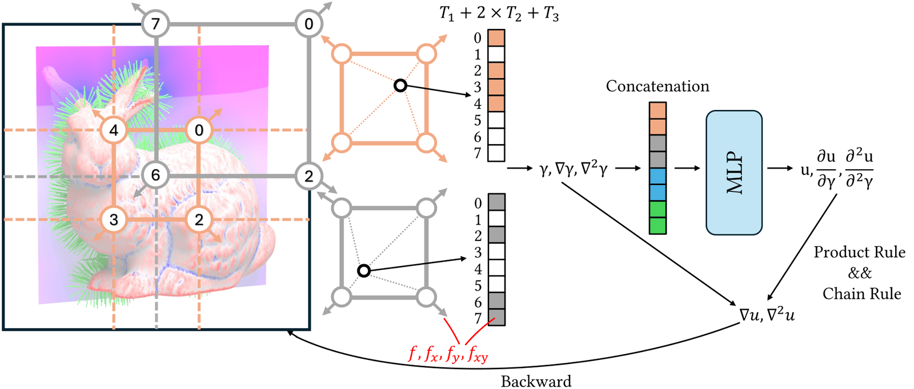
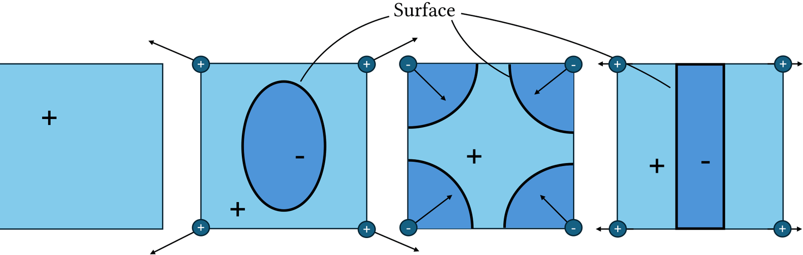
Results
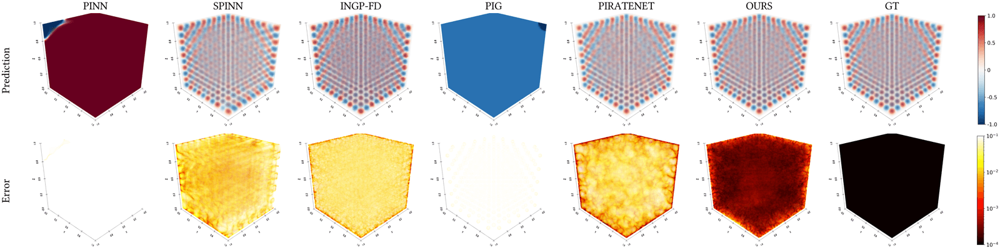
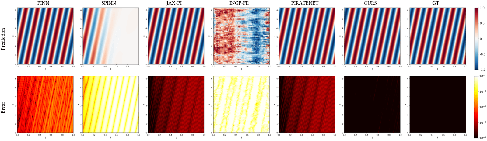
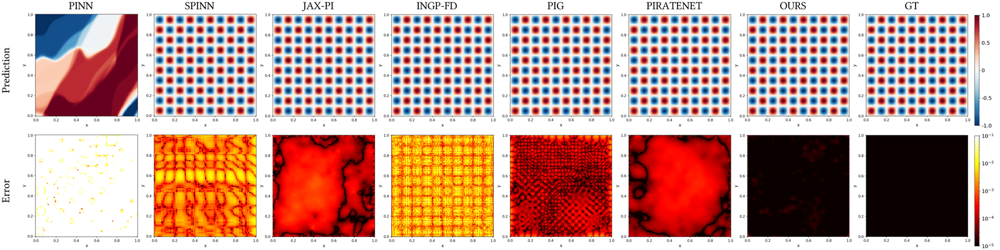
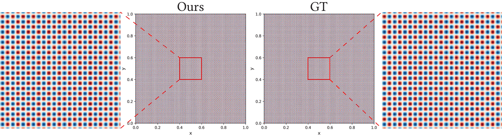
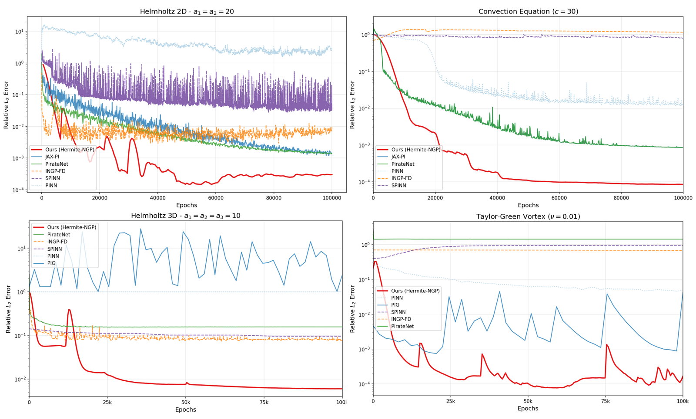
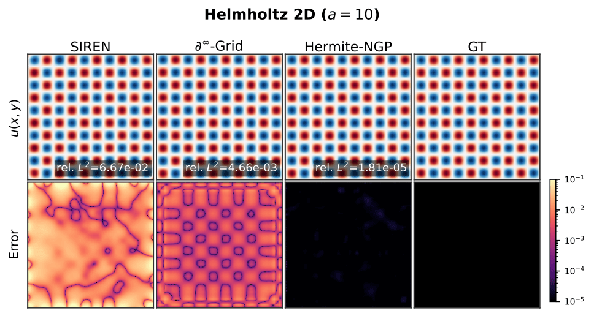
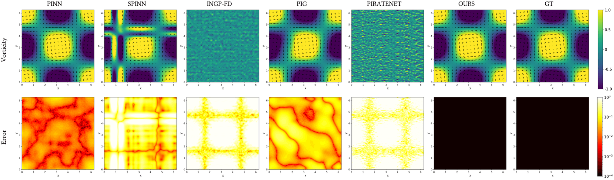
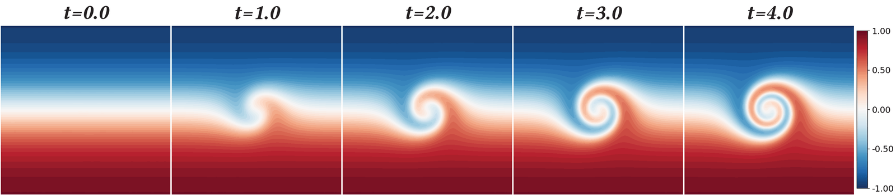
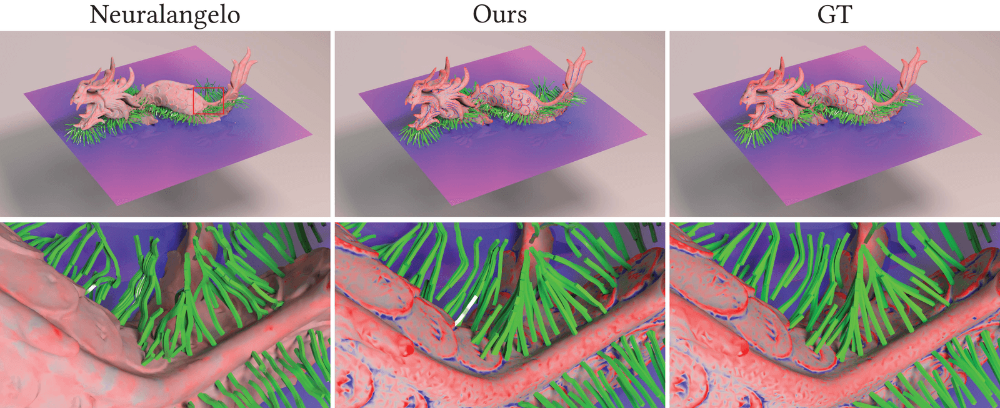
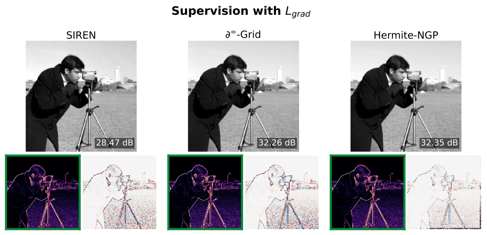
camera image, Hermite-NGP recovers sharper edges and finer texture than
$\partial^\infty$-Grid and SIREN while matching their soft-region quality.
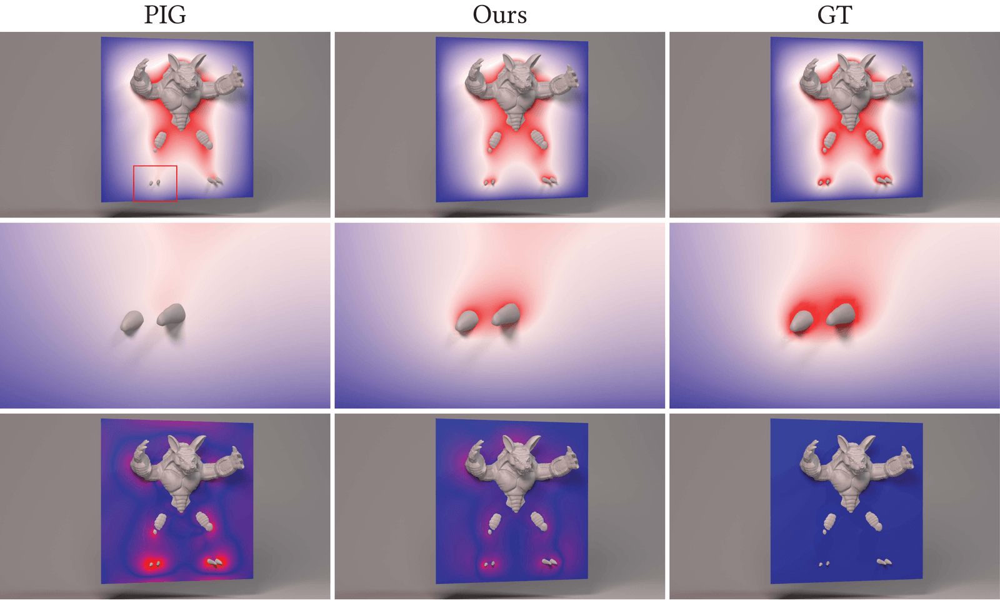
BibTeX
@inproceedings{he2026hermitengp,
title = {Hermite-NGP: Gradient-Augmented Hash Encoding for Learning PDEs},
author = {He, Jinjin and Li, Zhiqi and Wang, Sinan and Zhu, Bo},
booktitle = {International Conference on Machine Learning (ICML)},
year = {2026}
}